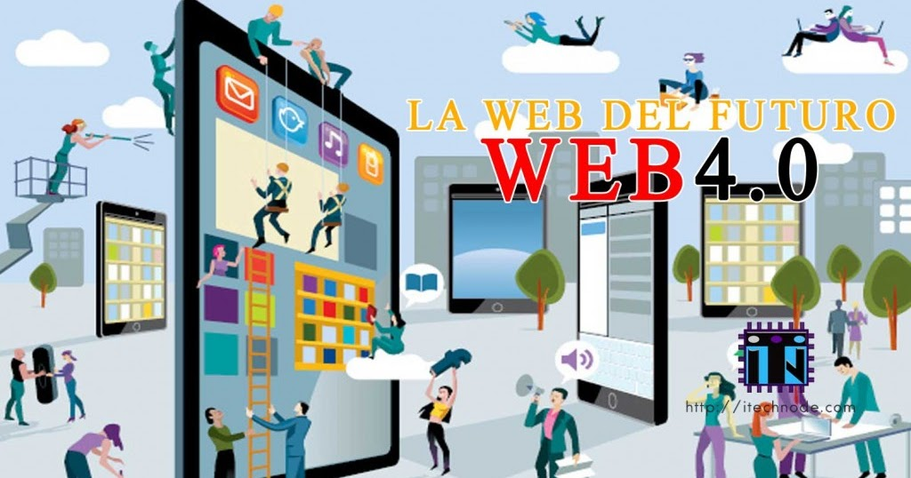

Linea del tiempo
| Año |
Información |
|---|
| 1990 |
Web 1.0 "The Web Web 1.0 se refiere a un estado de la World Wide Web. Es en general un término usado para describir la Web antes del impacto de la «fiebre punto com» (1997-2001), que es vista por muchos como el momento en que el internet dio un giro. |
 |
| 2004 |
La Web 2.0 supone un paso adelante en la evolución de Internet, para incorporar al usuario como un agente activo en su funcionamiento, y no como un mero cliente o receptor de la información. Esto pasa por sitios web dinámicos, en los que al usuario se le permita interactuar, generar contenido, o formar parte de comunidades virtuales. |
 |
| 2010 |
La web 3.0 es una extensión del WWW que, a través de agentes software, permiten encontrar, compartir e integrar la información más rápidamente. Otro aspecto relacionado con la web 3.0 es la transformación de la web en una base de datos, donde se llegaría a una situación en la que cada usuario tendría un perfil único en Internet basado en el historial de sus búsquedas. |
 |
| 2016 |
La web 4.0 es aquella en donde la experiencia del usuario es elemental al diseñar o crear plataformas, productos y servicios. "Se potencia la web semántica con el aporte de la inteligencia artificial para así proveerle a los consumidores una mejor experiencia". |
 |